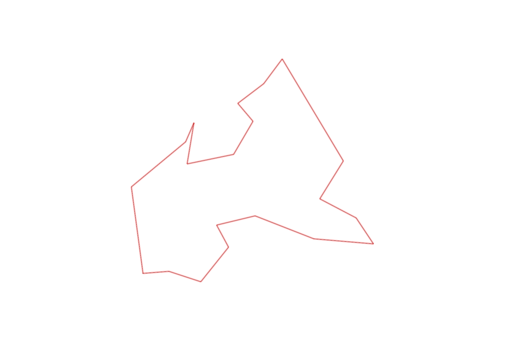
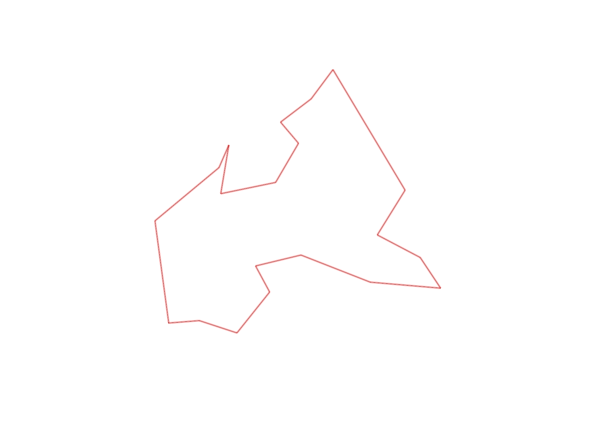

| Control |
Points |
Time Punched |
Distance |
Your Time |
Pace |
Place |
Fastest Time |
Median Time |
% Behind Fastest |
| 52 |
50 |
|
0.24 |
0:01:22 |
05:41 |
2 / 6 |
0:01:21 |
0:01:29 |
1% |
| 40 |
40 |
|
0.3 |
0:03:00 |
10:00 |
5 / 5 |
0:01:46 |
0:01:48 |
69% |
| 60 |
60 |
|
0.4 |
0:01:56 |
04:50 |
4 / 5 |
0:01:24 |
0:01:30 |
38% |
| 83 |
80 |
|
0.23 |
0:03:30 |
15:13 |
6 / 6 |
0:02:22 |
0:02:53 |
47% |
| 81 |
80 |
|
0.36 |
0:02:18 |
06:23 |
4 / 6 |
0:01:53 |
0:02:16 |
22% |
| 57 |
50 |
|
0.57 |
0:04:03 |
07:06 |
5 / 6 |
0:03:04 |
0:03:27 |
32% |
| 55 |
50 |
|
0.54 |
0:03:00 |
05:33 |
2 / 2 |
0:02:32 |
0:02:46 |
18% |
| 75 |
70 |
|
0.28 |
0:02:35 |
09:13 |
1 / 1 |
0:02:35 |
0:02:35 |
0% |
| 64 |
60 |
|
0.37 |
0:02:48 |
07:34 |
1 / 2 |
0:02:48 |
0:03:07 |
0% |
| 101 |
100 |
|
0.4 |
0:03:40 |
09:10 |
1 / 3 |
0:03:40 |
0:06:25 |
0% |
| 43 |
40 |
|
1.08 |
0:05:06 |
04:43 |
4 / 4 |
0:03:57 |
0:04:35 |
29% |
| 94 |
90 |
|
0.28 |
0:02:34 |
09:10 |
4 / 4 |
0:01:44 |
0:02:18 |
48% |
| 47 |
40 |
|
0.3 |
0:01:48 |
06:00 |
2 / 5 |
0:01:40 |
0:02:01 |
8% |
| 67 |
60 |
|
0.21 |
0:01:51 |
08:48 |
1 / 3 |
0:01:51 |
0:02:39 |
0% |
| 102 |
100 |
|
0.35 |
0:02:33 |
07:17 |
2 / 3 |
0:02:01 |
0:02:33 |
26% |
| 34 |
30 |
|
0.43 |
0:02:40 |
06:12 |
2 / 4 |
0:02:23 |
0:02:45 |
11% |
| 77 |
70 |
|
0.38 |
0:02:40 |
07:01 |
1 / 1 |
0:02:40 |
0:02:40 |
0% |
| 39 |
30 |
|
0.19 |
0:02:13 |
11:40 |
2 / 3 |
0:02:12 |
0:02:13 |
0% |
| 53 |
50 |
|
0.64 |
0:04:38 |
07:14 |
1 / 1 |
0:04:38 |
0:04:38 |
0% |
| Finish |
0 |
|
0.79 |
0:05:24 |
06:50 |
1 / 2 |
0:05:24 |
0:05:54 |
0% |
Total Distance Covered: 8.34km
Points Scored: 1150
Late Penalty: 0
Final Score: 1150
Total Time: 0hours 59minutes 39seconds
Efficiency: 137.89 points/km
 
